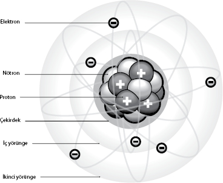

Hayat parçacıklarının keşfi
Prof. Dr. Paul Davies, fizikçi, yazar, yayıncı ve
BEYOND: Temel Bilimsel Kavramlar Merkezi yöneticisi
En basit deneyimler evraka anlarına kucak açabilir. Efsaneye göre, miras kalan onca zenginliğe ve dünya seyahatlerine rağmen, eski Yunan filozofu Demokritos evinde rahat rahat otururken fizikteki en temel kavramlardan birini buluverdi.
Anlatılanlara göre, kuramının esin kaynağı ekmeğin kokusuydu. Hizmetçisi taze bir ekmekle üst kata çıkarken, Demokritos'un zihninde şimşekler çaktı, kokunun burun deliklerine gelebilmesi için somundan ayrılıp havada yüzen bazı minicik ekmek parçacıklarının olması gerektiği sonucuna vardı. Durum böyleyse, bir peynir dilimini yarıya bölebilir, sonra o yarımı da yarıya böler ve böylece devam edebilirdi. En sonunda bıçak yeterince keskin olmadığından değil de, nihai parçacık bölünemeyecek kadar küçüleceğinden, geriye bölünemeyecek kadar küçük bir parça kalacaktı. İşte bu parçacığa Yunancada "bölünemez" anlamına gelen atom adını verdi.
Demokritos evrenin düzensiz bir şekilde uçuşan, milyarlarcasının birbiriyle çarpıştığı ve birleşerek gezegenlere yuvarlak şekillerini veren bu parçacıklardan oluştuğunu düşünüyordu. Atomlar ve küre gezegenler fikri MÖ 400 civarında ileri bir düzeye ulaşmıştı ve zamanın ilerisindeki her kuramda olduğu gibi, eğer kuramı kanıtlayamazsanız, genellikle unutulmaya yüz tutardı, özellikle de başka birileri farklı bir fikri bangır bangır bağırarak dillendiriyorsa...
"Dünya hakkında bildiğimiz bütün bilimsel bilgiler içinde en temel ve yaygın olanı atomların varlığıdır. Bu bilgi kaçınılmaz olarak kuantum mekaniğini doğurdu, bu sayede de transistör ve lazer gibi bir dizi teknolojiyle dünya tamamen değişti. Keza moleküler biyolojinin ve tüm biyoteknoloji devriminin doğmasına yol açtı. Gündelik hayatta bizi en çok etkileyen endüstrinin temelini ve kimyayı açıkladı. Nükleer enerjinin kapılarını araladı. Her şeyden önce de, varlığının kanıtlanmasının neredeyse iki bin beş yüz yılı bulduğu, görülemeyen bir şeye dayanan kapsamlı bir fizik kuramının insanlar tarafından kurulabileceğini gösterdi."
Paul Davies
Demokritos çok yaşayıp 90 yaşında öldüğünde, Aristo adındaki genç bir Yunan filozofunun fikirleri benimsenmeye başladı. Aristo bütün maddelerin beş elementten oluştuğunu savunuyordu: Toprak, ateş, hava, su ve eter (gökyüzü). Filozof olarak kendisi bütün yaşamın sevgi ve çatışma gibi kuvvetlerce düzenlenip kontrol edildiğine inanıyordu, ki bu fikir Demokritos'un kaotik dünyasıyla tamamen çelişiyordu. Minicik parçacıklardan oluşan madde kavramının bir gizem bilimcisinin çalışmasıyla tekrar gün yüzüne çıkarılması için aradan 1800 yılın geçmesi gerekiyordu.
İsmi Bilinmeyen Simyacı
On üçüncü yüzyılda ismi bilinmeyen bir simyacı bütün cisimlerin "zerre" adında minicik parçacıkların iç ve dış tabakalarından oluştuğunu öne sürdü. Geber takma adıyla yazdığı yazılarda bu gizemli bilimci cıva, sülfür gibi metal ve bileşiklerin bileşenlerine nasıl bölünebileceğini anlattı.
Bu fikir birkaç yüzyıl bilim laboratuvarlarını kasıp kavurdu, ama atom kuramının keşfedilmesine zemin hazırlayan çalışmalarda Anglo-İrlandalı Robert Boyle ve ardından İngiliz John Dalton'un imzası vardır.
Yerinde ismiyle The Sceptical Chymist (Kuşkucu Kimyacı) kitabını 1661'de yayınlayan Robert Boyle, bütün maddelerin farklı şekillerde bir araya gelen minicik parçacıklardan oluştuğunu, maddelerin birden fazla elementten oluşabileceğini –bileşik– öne sürdü. Yaklaşık bir asır sonra John Dalton bu fikri geliştirdi ve farklı elementlerin farklı atomlardan meydana geldiğini ve bu atomların belirli oranlarda birleştiğinde bileşikleri oluşturduğunu buldu. Dalton hem bir elementin ne olduğunu tam anlamıyla tanımlayan, hem de her element için semboller yaratan ilk kişidir. Daha sonra Dimitri Mendeleyev bu buluşu daha ayrıntılı ve düzenli hale getirerek Periyodik Tablo'yu hazırladı.
1900 yılına gelindiğinde başta Avusturyalı fizikçi Ernst Mach ve Alman kimyacı Wilhelm Ostwald olmak üzere bilim dünyasında etkili bazı bilimciler atomların fiziksel gerçekliğini reddediyorlardı. Atomların varlığını onaylamayı reddetmeleri büyük ölçüde pozitivist görüşe dayanıyordu. Atomların doğrudan kanıtlanamaması ve bu minvalde herhangi bir kanıtın elde edilmesinin imkansız olduğunun varsayılması, esas itibarıyla yok sayılmalarına neden oluyordu. Bu görüş Avusturyalı fizikçi Ludwig Boltzmann'ın görüşlerine karşı sürekli ve yüksek sesli bir kampanya başlatmalarına yol açtı. Boltzmann atomların fiziksel gerçekliğinin kabul edilmesinin maddenin pek çok özelliğinin doğal açıklamasını sağladığını göstermişti.
Çalışmalarını yıllarca yok saydıkları Boltzmann, 1906'da intihar ettiğinde bilimsel bir dinozor olarak görülüyordu. Aslında ölümünden yaklaşık bir yıl önce yayınlanan bir makale atomların varlığını nihayet kanıtlıyordu. Söz konusu makale Brown hareketi denen olguyu analiz ediyordu. Buna göre bir süspansiyondaki parçacıkların hareketi ancak atomların varlığıyla açıklanabilirdi. Makalenin yazarı genç bir patent memuru olan Albert Einstein'dı. Boltzmann'ın ölümünün üzerinden geçen iki yıl içinde Brown hareketi üzerine yapılan deneysel çalışmalar Ostwald'ı bile atomların varlığını kabul etmeye zorladı.
Atomların doğasına dair ilk görüşler, 1897'de ortaya çıktı. O yıl Britanyalı fizikçi Joseph John Thomson elektrik ve manyetik alanlardan geçen katot ışınlarının pozitif yüklü elektrik bir levhaya doğru nasıl büküldüğünü gözlemledi. Bu gözlem negatif yüklü parçacıkların varlığına işaret ediyordu. Daha önemlisi bu parçacıkların katottan geliyor olması gerektiği fikrine ulaştı. Böylece "zerre" ismini yeniden gündeme getirdi. Bir dizi kapsamlı deneyler neticesinde Thomson elektronu buldu ve atomların elektrondan daha da küçük parçacıklardan oluştuğu sonucuna vardı.
Üzümlü Kek Modeli
Rivayete göre Thomson Cambridge Laboratuvarı'nda elektronun keşfi için kadeh kaldırırken, "Faydasız elektronun şerefine," demiş. Aslında bu modele "üzümlü kek" adının verilmesinin nedeni parçacıkların kekin içindeki üzümler gibi olduğunun düşünülmesiydi. Bu model Thomson'a 1906'da Nobel Fizik Ödülü'nü kazandırdı ve elektrik gibi anahtar niteliğindeki fizik olgularının anlaşılmasına katkıda bulundu.
Sonraki yıllarda bir dizi fizikçi ve kimyacı atomların yapısı hakkında daha fazla bilgi edinmek için birlikte çalıştılar. Fizikçi Ernest Marsden ve Hans Geiger değişik maddelere her türden parçacık ateşleyerek sapma açısını ölçtüler. Elde ettikleri sonuçlar üzümlü kek modelinin hatalı olduğunu gösterdi, çünkü ışınları bir atomun dış parçalarından daha büyük açılarla saptıran merkezi bir kütle vardı. 1911'de fizikçilerin akıl hocası Yeni Zelanda doğumlu fizikçi ve kimyacı Ernest Rutherford atomun, yörüngesinde elektronların döndüğü yoğun bir çekirdekten oluştuğunu öne sürdü.

Güneşin çevresinde dönen gezegenleri andıran, merkezi bir kütlenin çevresinde dolanan elektronlar fikrinden yola çıkan, Rutherford'un öğrencisi Niels Bohr atomların yapısı için bir model önerdi. Bohr modeli elektronların çekirdeğin etrafındaki sabit "kabuklar" içinde döndüklerini öne sürüyordu. Her elementin kimyasal özellikleri dış kabuktaki elektron sayısına bağlıydı, fakat 1918'de Rutherford herkesin kafasını bir süre karıştıracak bir sorun ortaya attı.
Elementlerin tepki verme biçimi kütleleriyle uyuşmuyordu. Rutherford bir elektronun negatif elektrik yükünün proton denen bir parçacıktaki pozitif yükle dengelendiğini öne sürerek sorunu çözdü. Atom kütlesinin kalanı protonlar gibi çekirdekteki yüksüz "nötronlar"dan oluşuyordu.
Büyüklüğüne dair bir fikir vermesi bakımından, çekirdeğin Albert Hall (dünyanın en büyük konser salonu) büyüklüğündeki bir atomun içindeki bezelye kadar olduğunu ve kum tanesi büyüklüğündeki elektronların da locaların çevresinde dolandığını söyleyebiliriz. Buradan da anlaşılacağı üzere, nötronların keşfedilip varlıklarının kanıtlanması için aradan 14 yılın geçmesinde şaşırılacak bir şey yoktu. Bu keşif sayesinde James Chadwick 1935 yılında, Nobel Ödülü'ne layık görüldü.
Kuark ve gluon gibi maddeyi oluşturan daha küçük atomaltı parçacıklar olduğunu artık biliyoruz. Bu parçacıkları görmek fiilen mümkün değil, ama onları içeren parçacıklardan geriye kalan artığı inceleyerek hareketlerini ve özelliklerini ölçebiliyoruz.
Fransa-İsviçre sınırında, yerin derinliklerindeki Büyük Hadron Çarpıştırıcısı, 27 km uzunluğundaki bir tünelde hızlandırılmış parçacık "demetlerini" çarpıştırarak atomaltı parçacıkları ortaya çıkarıyor. Onların özelliklerini inceleyen bilimciler Evren'deki maddenin hayat hikayesini anlamayı umuyorlar.